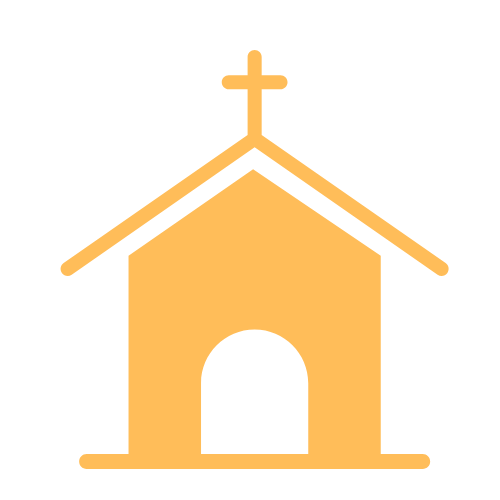

¿QUIÉNES SOMOS?
Somos Comunidad Cristiana, sede San Juan Centro, una iglesia dedicada a compartir el amor de Cristo apoyándonos unos a otros y buscando la salvación de quienes aún no conocen su gracia transformadora.
Creemos en Dios como Padre, Hijo y Espíritu Santo (1 Juan 5:7), y que la Biblia tiene una sola interpretación y sentido: el que Dios le ha dado en su debido contexto (2 Pedro 1:20-21). Afirmamos que la salvación no se obtiene por méritos humanos, sino por la fe en la obra redentora de Cristo en la cruz (Efesios 2:8-9). La transformación de vida es fruto del Espíritu Santo en nosotros (Gálatas 5:22), y la práctica cristiana debe ser voluntaria y enfocada en la gloria de Dios, libre de motivos egoístas (Colosenses 3:23).
Nuestros Horarios y Locación
Francisco N. Laprida Oeste 143, Capital
Servicio (presencial) - Domingos 10:00
Grupo de oración (presencial) - Miércoles 19:00
Iglesias Parte del Ministerio

Pagancillo
Hora Feliz
Reunión general
Viajes cada quince días
La Silvica
Hora feliz quincenalmente – Sábados
Brazos Abiertos fundación
Quiero saber más...